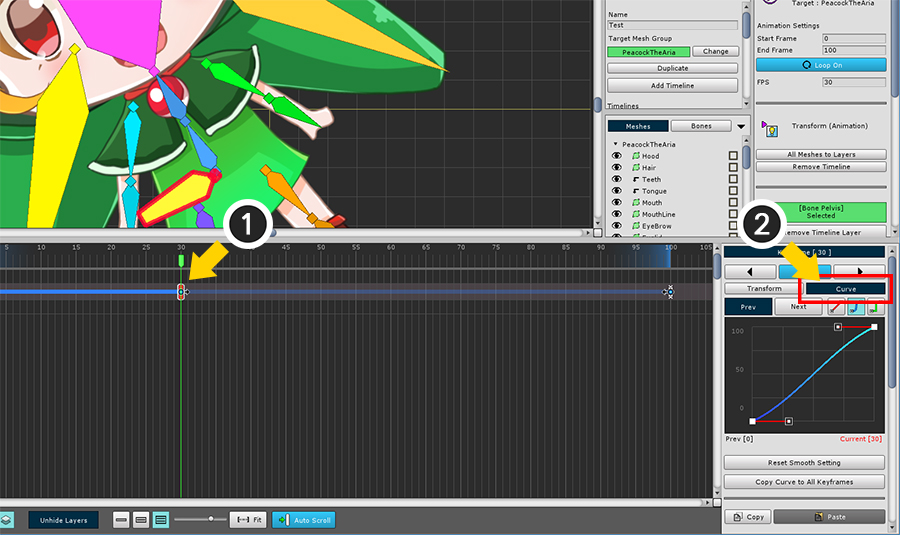
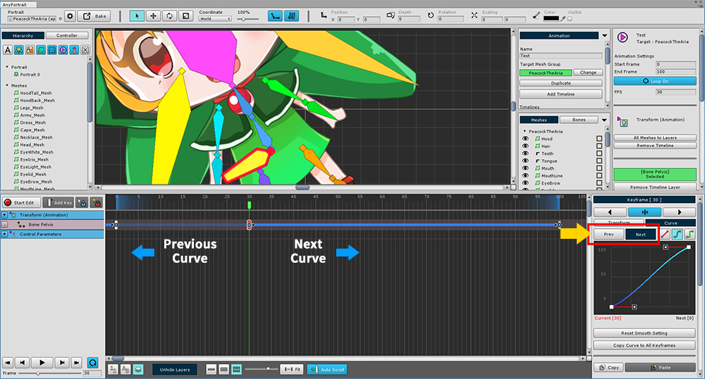
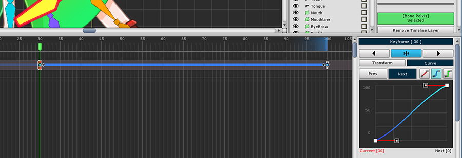
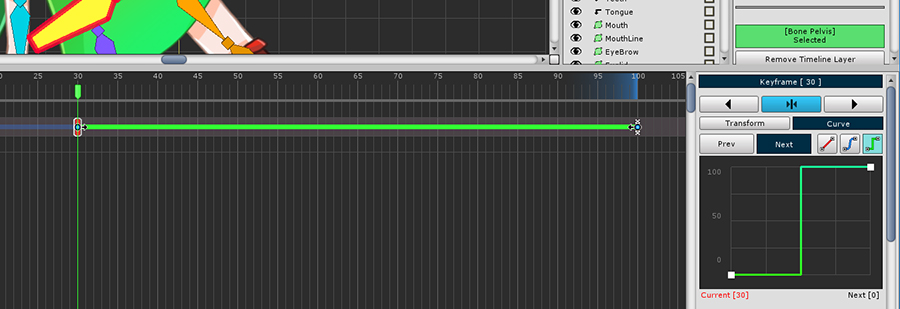
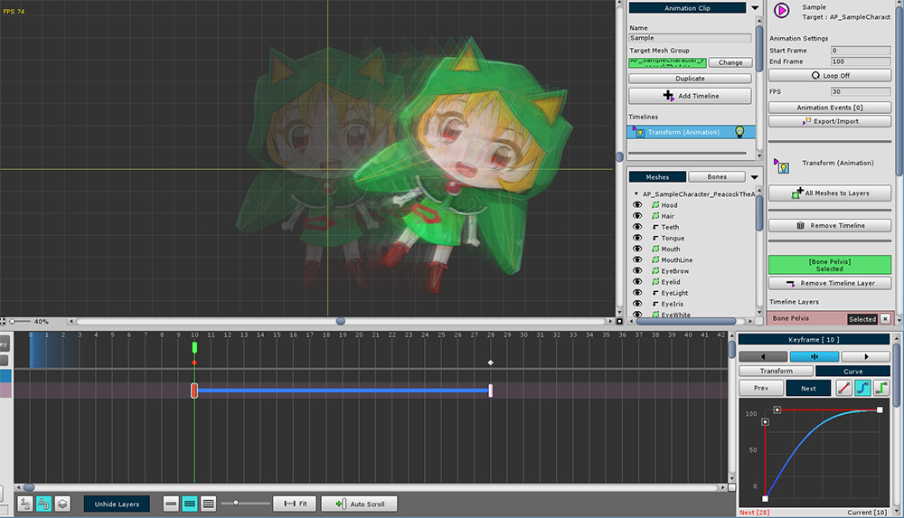
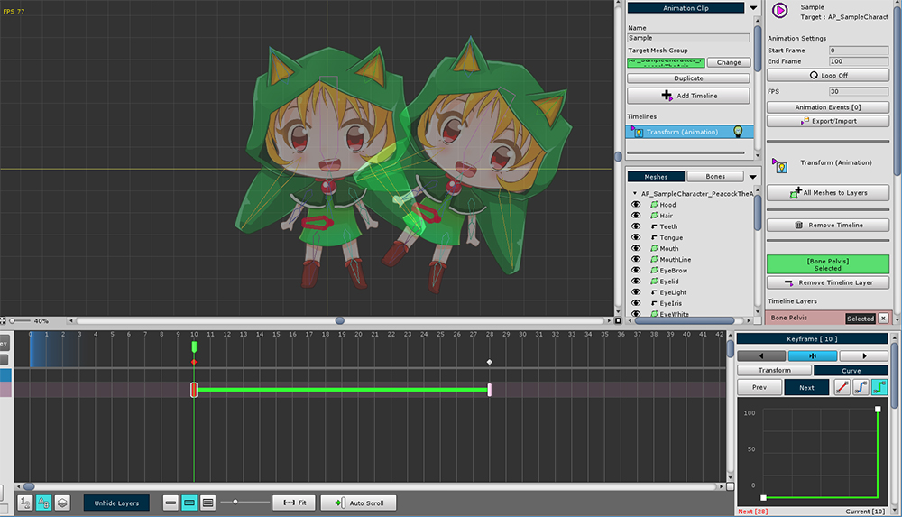

AnyPortrait > 시작하기 > 2.8. 애니메이션 커브 이해하기
2.8. 애니메이션 커브 이해하기
1.0.0
키프레임 애니메이션을 이해할 때 가장 중요한 원리는 보간(Interpolation)입니다.
보간은 키프레임과 키프레임 사이에 어떤 형태를 가질 것인가를 계산하는 과정입니다.
보간 방식에 따라서 동일한 키프레임을 가지더라도 애니메이션의 결과가 다를 수 있습니다.
이 페이지에서는 보간 방식을 다루는 애니메이션 커브에 대해서 다룹니다.

(1) 키프레임을 하나 선택하고, (2) Curve 탭을 선택합니다.
애니메이션 커브를 수정할 때에는 작업 영역에서도 커브의 종류가 굵은 선으로 나타납니다.

현재 선택된 키프레임을 기준으로 이전 키프레임과의 커브(Previous Curve)와 다음 키프레임과의 커브(Next Curve)를 선택할 수 있습니다.
선택된 커브는 타임라인 작업 영역에서 밝은 색으로 나타납니다.

애니메이션 커브의 상세 설정 화면입니다.
1. Prev/Next : 키프레임 기준으로 이전 커브, 다음 커브를 선택합니다.
2. 커브 종류 : 커브의 보간 계산 방식을 결정합니다. 각각 선형(Linear), 자유 곡선(Smooth), 고정값(Constant) 방식입니다.
3. 커브 편집 : 커브를 직접 편집하거나 볼 수 있습니다. 자유 곡선 방식인 경우 조절점을 직접 편집할 수 있습니다.
4. Reset Smooth Setting : 자유 곡선 방식인 경우 조절점을 초기값으로 되돌립니다.
5. Copy Curve to All Keyframes : 현재 커브의 설정을 해당 타임라인 레이어의 모든 키프레임에 적용합니다.
6. 키프레임 복사/붙여넣기 : 키프레임 정보를 임시로 복사하거나 붙여넣습니다.
7. 자세 내보내기/가져오기 : 본 애니메이션의 키프레임인 경우 자세를 저장하거나 열 수 있습니다.
8. 키프레임 삭제
커브 계산 방식의 종류에 따라 다르게 애니메이션이 처리됩니다.

1. 선형 (Linear)
움직임, 크기 등이 일정하게 변합니다.

2. 자유 곡선 (Smooth)
움직임, 크기 등이 부드럽게 변합니다.
사용자가 변화하는 정도를 직접 지정할 수 있습니다.
가속도를 주거나 키프레임 전후에서 부드럽게 전환될 때 용이합니다.

3. 고정값 (Constant)
키프레임간의 끝 지점을 기준으로 값이 바뀝니다.
스프라이트 애니메이션 같은 효과를 줄 수 있습니다.
커브 종류에 따라 실제로 어떻게 다른지 확인해보겠습니다.

1. 선형 (Linear)
커브의 색상은 붉은색입니다.
시작부터 끝까지 일정한 간격으로 변하는 것을 볼 수 있습니다.

2. 자유 곡선 (Smooth)
커브의 색상은 푸른색입니다.
기본값 상태에서는 선형과 유사하지만 시작과 끝 부분에 약간의 가속, 감속이 존재합니다.

2-1. 가속되는 자유 곡선 (Smooth)
자유 곡선의 변형 예시입니다.
시작 키프레임 값에 가깝게 유지하다가 나중에 빠르게 가속되어 변합니다.

2-2. 감속되는 자유 곡선 (Smooth)
자유 곡선의 변형 예시입니다.
시작 키프레임에서 빠르게 변한 뒤 감속하는 모습을 볼 수 있습니다.

3. 고정값 (Constant)
커브의 색상은 녹색입니다.
보간 상태가 시작, 끝 두가지 밖에 없습니다.
끝 지점을 기준으로 변형이 됩니다.